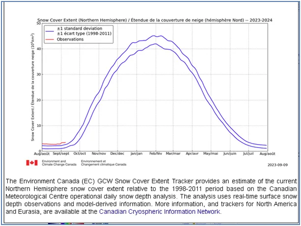
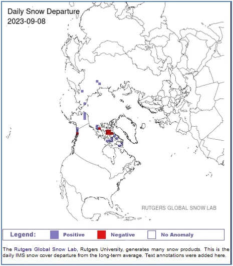
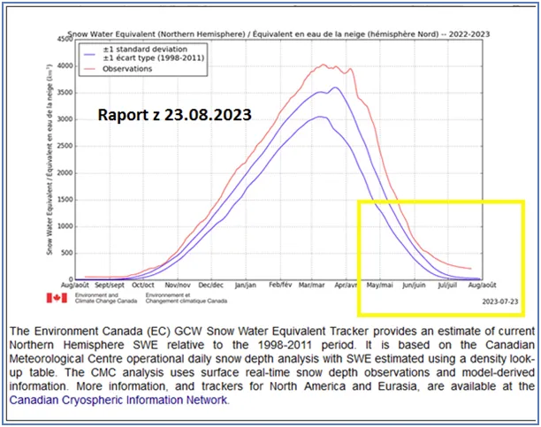
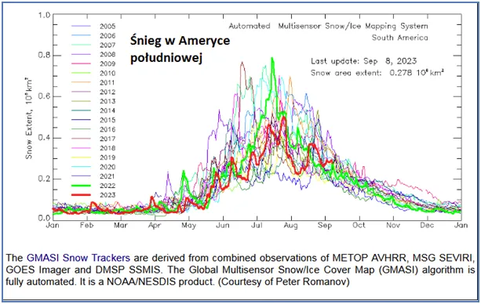
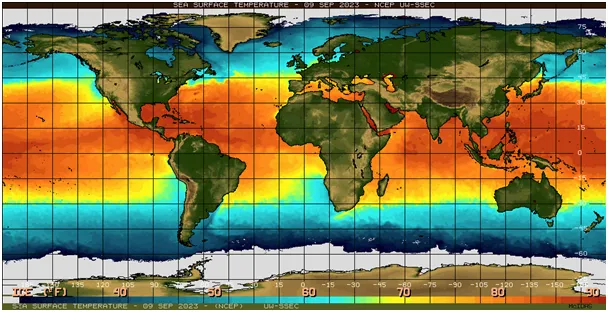

Czy w Arktyce jest “babie lato”?
"Babie lato", Józef Chełmoński, 1875
Gdy my pławimy się we wrześniowym lecie, na dalekiej północy lato polarne dobiegło końca i przybywa już śniegu.
Na mapce północnej hemisfery widać to jako niebieskie pola, tam pojawiał się nowy śnieg ubiegłej doby. Czerwone pola to miejsca, gdzie śnieg stopniał. Jak widać na wykresie czerwona linia jest wysoko nad typowym przedziałem ilości śniegu z lat ubiegłych i powoli wspina się na kolejne rekordowe poziomy. Dwie niebieskie linie to górny i dolny przedział "normy" z lat ubiegłych.

Przypominam, że pierwszy raz obserwujemy sytuację, że w rejonach polarnych arktyczne lato nie zdołało stopić śniegu w wielu miejscach, jak to bywało w dekadach wstecz.

Olbrzymie ilości, które spadły na Arktykę w lutym i marcu nie stopniały i w nowy sezon 2023/24 wchodzimy z zapasami z sezonu poprzedniego. Widać to na drugim wykresie z końca sierpnia.
Przypominam też, że na wykresie pierwszym w nowy sezon wchodzimy z zaniżonym poziomem śniegu, co jest jak myślę, skutkiem "zmiany metody" pomiaru/interpretacji autorów wykresu. W chwili przechodzenia na nowy sezon czerwona kreska, pojawiła się po lewej znacznie niżej, niż doszła w końcu sezonu po prawej.

Czwarty wykres to opady śniegu na południu w Ameryce Południowej, w górach Chile i Argentyny. Na tamtej półkuli dominują oceany, odwrotnie niż ma to miejsce na naszej półkuli.

Wiemy z długoletnich badań (2009-2019 https://doi.org/10.5194/tc-17-2059-2023), ocean południowy wokół Antarktydy zamarza co roku bardziej i ocean południowy jest coraz chłodniejszy. Zimny ocean nie paruje tak jak ciepły i brak na dalekim południu chmur, które by dały dużo śniegu nad kontynentem. Mało śniegu oznacza kurczenie się lodowców, które zsuwają się z gór do ciepłych dolin i tam jak zawsze topnieją, nie są jednak dostatecznie zasilane od góry nowym śniegiem i znikają. Znikają z powodu ochłodzenia oceanu!

Mantra: Powietrze nie nagrzewa się od promieni słonecznych! Słońce nagrzewa tylko oceany, skały, cokolwiek ma kolor, z wyjątkiem bieli. Powietrze jest przeźroczyste i od Słońca się nie nagrzewa.
Spodziewajmy się zmian pogody, bo mamy wyjątkowy okres, gdy dwa cykle aktywności Słońca, 11 letni i 107 letni spotkały się w podwójnym dołku. Wychodzimy z tego dołka od zeszłego roku. Nie spodziewajmy się nigdy "typowej pogody", bo czynniki ją kształtujące, w tym kosmiczne zmieniają się nieustannie. Możemy w tej sytuacji być szczęśliwi, że dzięki trajektorii Ziemi wokół Słońca mamy piękne cztery pory roku.
Paweł Klimczewski